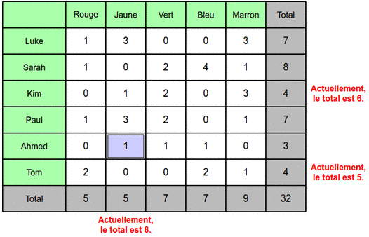
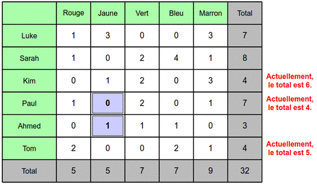

Solution
Il y a une ligne et une colonne dont les totaux sont à corriger. Comme on ne peut modifier qu'un seul nombre, c'est forcément celui à l'intersection de cette ligne et de cette colonne. Pour faire passer les totaux de 7 à 6, il faut ainsi remplacer le 3 par un 2.
Il y a deux lignes et deux colonnes dont les totaux sont à corriger. Comme on ne peut modifier que deux cases, il faut agir sur deux des quatres cases qui se trouvent aux intersections de ces lignes et de ces colonnes.
Pour réparer la ligne Ahmed, on ne peut pas faire diminuer la valeur de la case avec le 0 (ligne Ahmed, colonne Jaune). Il faut donc forcément corriger la case avec le 1 (ligne Ahmed, colonne Bleu), en y plaçant un zéro.
Il reste alors une seule operation pour corriger la ligne Sarah et la colonne jaune, ce que l'on ne peut faire qu'en modifiant la case contenant le 1 (ligne Sarah, colonne Jaune), en y plaçant un 2.
Il y a trois lignes et une colonne à corriger. Pour corriger les lignes, il y a de nombreuses possibilités. Pour corriger la colonne Jaune, en revanche, il y a moins de possibilités, donc on va commencer par là.
Pour passer d'un total de 9 à un total de 5 sur la colonne Jaune, il faut enlever 4 unités. Comme aucune case ne contient un chiffre de 4 ou plus, cela veut dire qu'il faut obligatoirement modifier deux cases.
Si l'on répare la colonne Jaune en modifiant deux cases sans faire attention, on se retrouve dans une situation où il reste 4 lignes à réparer, comme par exemple la situation ci-dessous. Or, vu qu'on a déjà utilisé 2 modifications, on ne peut plus en faire que 3, donc on ne pourra pas réussir.
Pour réussir, il faut forcément réparer une ligne en même temps que l'on répare la colonne Jaune. Il n'y a qu'une seule manière de faire : placer un 1 comme montré ci-dessous :

Ensuite, on répare la colonne Jaune comme on peut. On est obligé de casser le total d'une autre ligne, il n'y a pas le choix. Une première façon de faire est montrée ci-dessous :

À ce stade, il faut réparer trois lignes. Pour ne pas casser les totaux des colonnes, il faut effectuer toutes les modifications sur une même colonne. Seule la dernière colonne permet cela. En y plaçant les nombres appropriés, on obtient ainsi une première solution :
Une second solution consiste à corriger la colonne Jaune en plaçant un 0 sur la première ligne :

À ce stade, il n'y a plus aucun choix possible, on est également contraint de travailler sur la dernière colonne pour pouvoir réparer les trois lignes avec trois modifications. On obtient ainsi la seconde solution :
C'est de l'informatique !
On imagine souvent que lorsqu'on écrit des nombres dans un fichier sur son ordinateur, alors les nombres de ce fichier resteront inchangés jusqu'à la prochaine fois qu'on ouvrira le fichier. En fait, on aimerait bien que ça soit le cas. Mais qu'est ce qui nous le garantit ?
Le fichier est sauvegardé d'abord dans la mémoire "vive" de l'ordinateur, puis est acheminé par de minuscules fils électriques. L'information peut alors être stockée sur un disque dur, en utilisant des propriétés magnétiques (en gros, des aimants miniatures). Si le fichier passe par le réseau, il transitera sans doute par une fibre optique, où des rayons lumineux transporteront l'information sur des milliers de kilomètres. Qui peut alors garantir qu'aucun des chiffres du fichier ne sera jamais modifié ?
En fait, personne ne peut le garantir vraiment. Les processus physiques mis en jeu sont à des échelles si petites qu'il peut y avoir une infime probabilité que tout un coup un 0 soit transformé en un 1, ou inversement. En particulier, des rayons cosmiques produit par le soleil peuvent apporter un petit sursaut d'énergie localement et transformer un 0 en un 1. On pourrait croire à une blague du premier avril, mais non, ce sont des phénomènes réels étudiés depuis les années 70.
Ces phénomènes sont très très rares, mais comme on manipule chaque seconde des milliards de 0 et de 1, au final il est assez probable d'avoir plusieurs chiffres modifiés chaque année sur son ordinateur personnel. Heureusement, des techniques spécifiques ont été développées pour pouvoir corriger automatiquement ce type d'erreurs aléatoires. Mais comment est-ce possible ?
Ce sujet illustre justement une méthode permettant de mettre en place un code correcteur d'erreurs. L'idée est que lorsqu'on a des informations (le contenu des cases blanches du tableau du sujet) on peut avoir envie de stocker un peu plus d'information (la valeur du total de chaque ligne et colonne), de sorte que si jamais une donnée du tableau se retrouvait modifiée par erreur, alors on serait capable non seulement de détecter qu'il y a une erreur, mais également de corriger l'erreur.
Dans le cas du tableau dont a stocké les lignes et les colonnes, si on a 1, 2 ou 3 cases modifiées, alors on est toujours capable de retrouver quelles étaient les valeurs d'origine. Par contre, au delà de 3 modifications erronées en même temps, on ne sait pas forcément corriger les données. Heureusement, la probabilité d'avoir une modification aléatoire est très très faible, et la probabilité d'avoir 4 modifications en mêmes temps est encore petite. On peut donc espérer que cela n'arrive presque jamais, et même que, le jour où cela arrive, ça tombe sur des chiffres qui ne sont pas importants. Par exemple, qui serait capable de remarquer un changement de la couleur d'un pixel affiché pendant une fraction de seconde au milieu d'un film ?